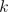
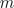
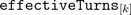
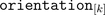
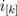
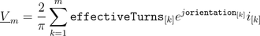
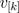
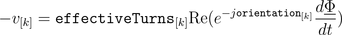
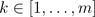
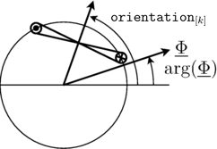

MultiPhaseElectroMagneticConverterMulti phase electro magnetic converter |
|
Diagram
{kind=link}
Information
This information is part of the Modelica Standard Library maintained by the Modelica Association.
Each phase  of an  phase winding has an effective number of turns,  and an respective winging angle  and a phase current .
The total complex magnetic potential difference of the multi phase winding is determined by:

In this equation each contribution of a winding magnetomotive force on the total complex magnetic potential difference is aligned with the respective orientation of the winding.
The voltages  induced in each winding depend on the cosines between the orientation of the winding and the angle of the complex magnetic flux. Additionally, the magnitudes of the induced voltages are proportional to the respective number of turns. This relationship can be modeled by means of

for  and is also illustrated by the following figure:
|  |
See also
Parameters (2)
| effectiveTurns |
Value: Type: Real[m] Description: Effective number of turns |
|---|---|
| orientation |
Value: Type: Angle[m] (rad) Description: Orientation of the resulting fundamental wave field phasor |
Connectors (4)
| plug_p |
Type: PositivePlug Description: Positive plug |
|
|---|---|---|
| plug_n |
Type: NegativePlug Description: Negative plug |
|
| port_p |
Type: PositiveMagneticPort Description: Positive complex magnetic port |
|
| port_n |
Type: NegativeMagneticPort Description: Negative complex magnetic port |
Components (3)
| V_m |
Type: ComplexMagneticPotentialDifference Description: Magnetic potential difference |
|
|---|---|---|
| Phi |
Type: ComplexMagneticFlux Description: Magnetic flux |
|
| singlePhaseElectroMagneticConverter |
Used in Examples (2)
|
Modelica.Magnetic.FundamentalWave.Examples.Components Comparison of equivalent circuits of eddy current loss models |
|
|
Modelica.Magnetic.FundamentalWave.Examples.Components Multi phase inductance |
Used in Components (5)
|
Modelica.Magnetic.FundamentalWave.BasicMachines.Components Symmetric winding model coupling electrical and magnetic domain |
|
|
SymmetricMultiPhaseCageWinding Modelica.Magnetic.FundamentalWave.BasicMachines.Components Symmetrical rotor cage |
|
|
Modelica.Magnetic.FundamentalWave.BasicMachines.Components Rotor cage with saliency in d- and q-axis |
|
|
SymmetricMultiPhaseCageWinding_obsolete Modelica.Magnetic.FundamentalWave.BasicMachines.Components Symmetrical rotor cage |
|
|
Modelica.Magnetic.FundamentalWave.BasicMachines.Components Rotor cage with saliency in d- and q-axis |